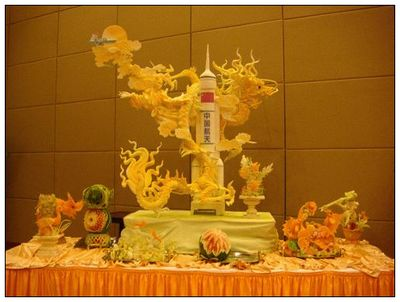
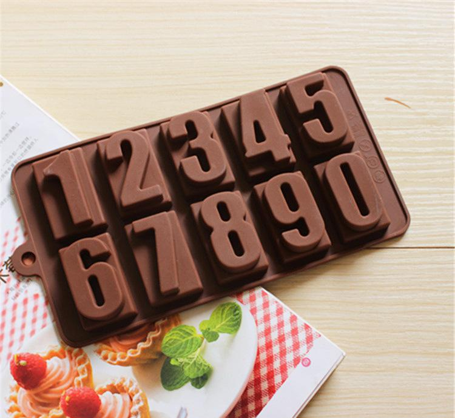
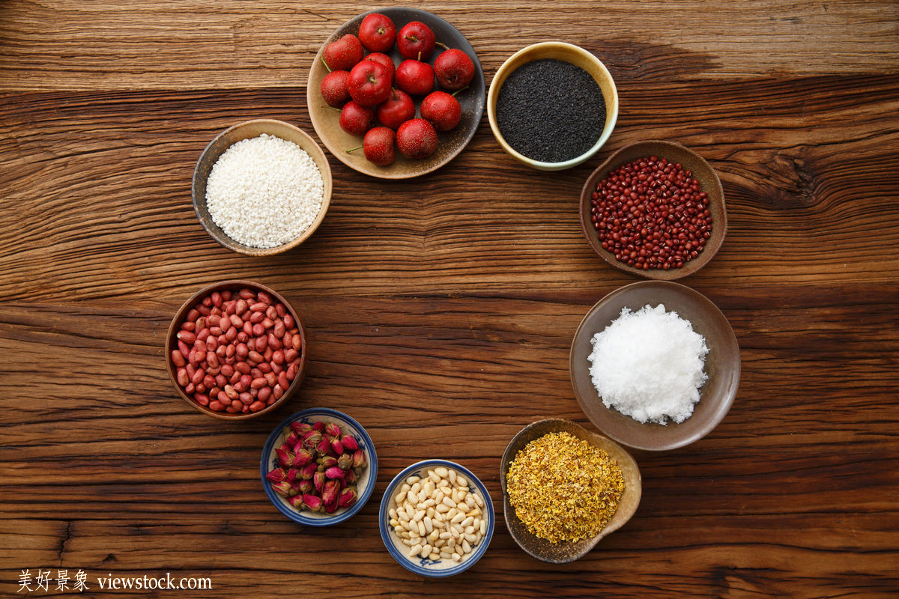
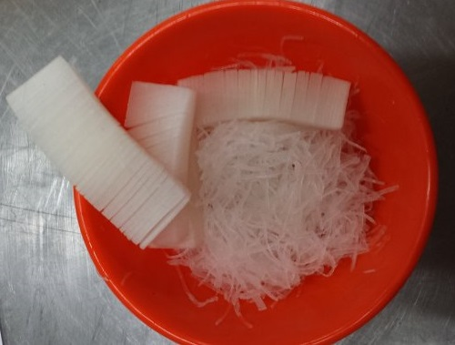
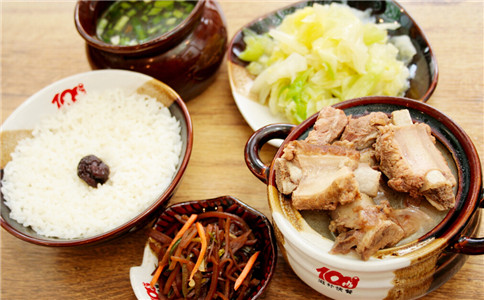
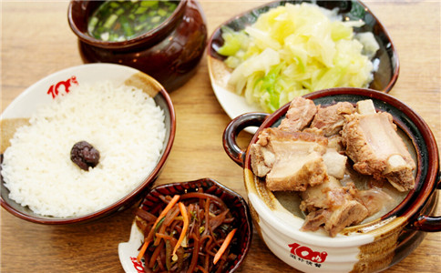
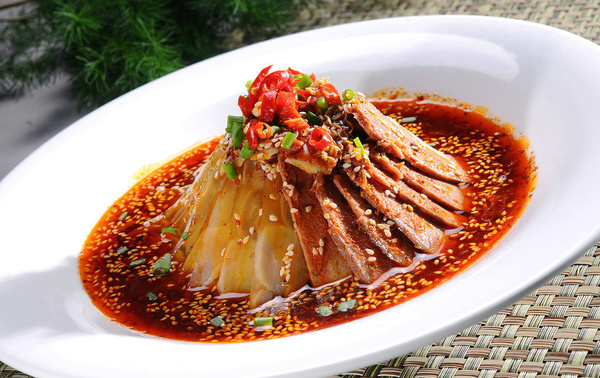

- 雕刻历史
- 浮雕
- 模扣
- 《管子》一书中曾提到“雕卵”，即在蛋上进行雕画，可能是世界上最早的食品雕刻。其技后世沿之，直至今天。至隋唐时， 又在酥酪、鸡蛋、脂油上进行雕镂，装饰在饭的上面。宋代，席上雕刻食品成为风尚，所雕的为果品、姜、笋制成的蜜饯， 造型为千姿百态的鸟兽虫鱼与亭台楼阁。虽然反映了贵族官僚生活豪奢，但也表现了当时厨师手艺的精妙。至清代乾、嘉年间， 扬州席上，厨师雕有“西瓜灯”，专供欣赏，不供食用；北京中秋赏月时，往往雕西瓜为莲瓣；此外更有雕为冬瓜盅、西瓜盅者， 瓜灯首推淮扬，冬瓜盅以广东为著名，瓜皮上雕有花纹，瓤内装有美味，赏瓜食馔，独具风味。这些，都体现了中国厨师高超 的技艺与巧思，与工艺美术中的玉雕、石雕一样，是一门充满诗情画意的艺术，至今被外国朋友赞誉为“中国厨师的绝技”和 “东方饮食艺术的明珠”。
- 浮雕，顾名思义就是在原料的表面上，表现出画面的雕刻方法。又有阴纹浮雕和阳纹浮雕之分。阴纹浮雕是用“V”形刀，在 原料表面插出“V”形的线条图案，此法在操作时较为方便；阳纹浮雕是将画面之外的多余部分刻掉，留有“凸”形，高于表面 的图案。这种方法比较费力，但效果很好。另外，阳纹浮雕还可根据画面的设计要求，逐层推进，以达到更高的艺术效果， 此法适合于刻制亭台楼阁、人物、风景等。具有半立体、半浮雕的特点，其难度和要求较大。 
- 模扣，在这里是指用不锈钢片或铜片弯制成的各种动物、植物等的外部轮廓的食品模型。使用时，可将雕刻原料切成厚片， 用模型刀在原料上用力向下按压成型，再将原料一片片切开，或配菜，或点缀于盘边，若是熟制品，如：蛋糕、火腿等等可直接 入菜，以供食用。食品雕刻新手最好的练习用具是主刀,U型刀,插刀和白萝卜,水果拼盘时要注意填满盘子.镶边时镶嵌部分 要小于整个盘子的 3分之1.
艺术倾向
中国饮食文化，由于特定的经济结构，思维方式与文化环境，形成了自身鲜明的特色，即艺术倾向，主要表现在以下六个方面。
选料精良
选料，是中国厨师的首要技艺，是做好一品中国菜肴美食的基础，要具备丰富的知识和熟练运用的技巧。每种菜肴美食所取的原料， 包括主料、配料、辅料、调料等，都有很多讲究和一定之规。概而言之，“精”、“细”二字，所谓孔子所说的“食不厌精，脍不厌细”也。所谓“精”， 指所选取的原料，要考虑其品种、产地、季节、生长期等特点，以新鲜肥嫩、质料优良为佳。汉唐时代，习惯于将美味佳肴称作“八珍”。大约从宋代开始， 八珍具体指称八种珍贵的烹饪原料。到了清代，各种系列的“八珍”不胜枚举，主要指的是八种珍稀原料组合的宴席。如“满汉全席”的“四八珍”， 即指四组八珍组合的宴席。四八珍即山八珍、海八珍、禽八珍、草八珍，各指32种珍贵的原料，具体是：
山八珍：驼峰、熊掌、猴脑、猩唇、象拢、豹胎、犀尾、鹿筋。
海八珍：燕窝、鱼翅、大乌参、鱼肚、鱼骨、鲍鱼、海豹、狗鱼（大鲵）。
禽八珍：红燕、飞龙、鹌鹑、天鹅、鹧鸪、彩雀、斑鸠、红头鹰。
草八珍：猴头、银耳、竹荪、驴窝菌、羊肚菌、花菇、黄花菜、云香信。
刀工细巧
刀功，即厨师对原料进行刀法处理，使之成为烹调所需要的，整齐一致的形态，以适应火候，受热均匀，便于入味，并保持一定的形态美， 因而是烹调技术的关键之一。我国早在古代就重视刀法的运用，经过历代厨师的反复实践，创造了丰富的刀法，如直刀法、片刀法、斜刀法、剞刀法 （在原料上划上刀纹而不切断）和雕刻刀法等，把原料加工成片、条、丝、块、丁、粒、茸、泥等多种形态和丸、球、麦穗花、荔子花、蓑衣花、兰花、 菊花等多样花色，还可镂空成美丽的图案花纹，雕刻成“喜”、“寿”、“福”、“禄”字样，增添喜庆筵席的欢乐气氛。特别是刀技和拼摆手法相结合， 把熟料和可食生料拼成艺术性强、形象逼真的鸟、兽、虫、鱼、花、草等花式拼盘，如“龙凤呈祥”、“孔雀开屏”、“喜鹊登梅”、“荷花仙鹤”、 “花篮双凤”等。例如“孔雀开屏”，是用鸭肉、火腿、猪舌、鹌鹑蛋、蟹蚶肉、黄瓜等十五种原料，经过二十二道精细刀技和拼摆工序才完成。 不仅仅文学家将精艺的刀工当做完美的艺术欣赏，普通的百姓也往往是一睹为快。为了开开眼界，古代有人专门组织过刀工表演，引起了轰动。 南宋曾三异的《同话录》说，有一年泰山举办绝活表演，“天下之精艺毕集”，自然也包括精于厨艺者。“有一庖人，令一人裸背俯伏于地，以其背为几， 取肉一斤许，运刀细缕之。撤肉而试，兵背无丝毫之伤。”以人背为砧板，缕切肉丝而背不伤破，这一招不能不令人称绝。火候独到
火候独到
火候，是形成菜肴美食的风味特色的关键之一。但火候瞬息万变，没有多年操作实践经验很难做到恰到好处。 因而，掌握适当火候是中国厨师的一门绝技。中国厨师能精确鉴别旺火、中火、微火等不同火力，熟悉了解各种原料的耐热程度， 熟练控制用火时间，善于掌握传热物体（油、水、气）的性能，还能根据原料的老嫩程度、水分多少、形态大小、整碎厚薄等， 确定下锅的次序，加以灵活运用，使烹制出来的菜肴，要嫩就嫩，要酥就酥，要烂就烂。早在古代，中国厨师就对火候有过专门研究， 并阐明火候变化规律及掌握要点：“五味三材，九沸九变，必以其胜，无失其理。”（《吕氏春秋》）北宋大诗人苏轼不仅是位美食家， 而且还是一位烹调家，创造出著名的“东坡肉”菜肴，这和他善于运用火候有密切关系，他还把这些经验写入炖肉诗中：“慢着火， 少着水，火候到时自然美。”后人运用他的经验，采用密封微火焖熟法，烧出的肉原汁原味，油润鲜红，烂而不碎，糯而不腻， 酥软犹如豆腐，适口而风味突出。
确定下锅的次序，加以灵活运用，使烹制出来的菜肴，要嫩就嫩，要酥就酥，要烂就烂。早在古代，中国厨师就对火候有过专门研究， 并阐明火候变化规律及掌握要点：“五味三材，九沸九变，必以其胜，无失其理。”（《吕氏春秋》）北宋大诗人苏轼不仅是位美食家， 而且还是一位烹调家，创造出著名的“东坡肉”菜肴，这和他善于运用火候有密切关系，他还把这些经验写入炖肉诗中：“慢着火， 少着水，火候到时自然美。”后人运用他的经验，采用密封微火焖熟法，烧出的肉原汁原味，油润鲜红，烂而不碎，糯而不腻， 酥软犹如豆腐，适口而风味突出。
火候是烹调中最重要的事，同时也是最难把握和说明的事，真可谓是“道可道，非常道”， 而一位烹饪者能否成为名厨，火候乃其关键，所以中国饮食中的厨者在操作时，积一生之经验、悟己身之灵性， 充分发挥自己细微的观察体验能和和丰富的想象能力，进行饮食艺术的创造。所谓运用之妙，存乎一心，真是“得失寸心知”了。
技法各异
烹调技法，是我国厨师的又一门绝技。常用的技法有：炒、爆、炸、烹、溜、煎、贴、烩、扒、烧、炖、焖、氽、 煮、酱、卤、蒸、烤、拌、炝、熏，以及甜菜的拔丝、蜜汁、挂霜等。不同技法具有不同的风味特色。 每种技法都有几种乃至几十种名菜。 著名“叫化鸡”，以泥烤技法，扬名四海。相传古代江苏常熟有一乞丐偷得一只鸡，因无炊具，把鸡宰杀后除去内脏，放入葱盐， 加以缝合，糊以黄泥，架火烤烧，泥干鸡熟，敲土食之，肉质鲜嫩，香气四溢。后经厨师改进，配以多种调料，加以烤制，味道更美， 遂成名菜。云南“过桥米线”，是氽的技法杰作。相传古代有位书生在书房中攻读，其妻为使他能吃上热汤热饭，便创造了这一氽法： 将母鸡熬成沸热的鸡汤，配以切成细薄的鸡片、鱼片、虾片和米线，因面上浮油能起保温作用，并能氽熟上述食品， 而且过桥后尚能保持热而鲜嫩，从而创造了氽这一重要烹调技法。
每种技法都有几种乃至几十种名菜。 著名“叫化鸡”，以泥烤技法，扬名四海。相传古代江苏常熟有一乞丐偷得一只鸡，因无炊具，把鸡宰杀后除去内脏，放入葱盐， 加以缝合，糊以黄泥，架火烤烧，泥干鸡熟，敲土食之，肉质鲜嫩，香气四溢。后经厨师改进，配以多种调料，加以烤制，味道更美， 遂成名菜。云南“过桥米线”，是氽的技法杰作。相传古代有位书生在书房中攻读，其妻为使他能吃上热汤热饭，便创造了这一氽法： 将母鸡熬成沸热的鸡汤，配以切成细薄的鸡片、鱼片、虾片和米线，因面上浮油能起保温作用，并能氽熟上述食品， 而且过桥后尚能保持热而鲜嫩，从而创造了氽这一重要烹调技法。
五味调和
调味，也是烹调的一种重要技艺，所谓“五味调和百味香”。关于调味的作用，据烹饪界学者的研究，主要有以下几个：
矫除原料异味；无味者赋味；确定肴馔口味；
增加食品香味；赋予菜肴色泽；可以杀菌消毒。
调味的方法也变化多样，主要有基本调味、定型调味和辅助调味三种，以定型调味方法运用最多。所谓定型调味，指原料加热过程中的调味，是为了确定菜肴的口味。基本调味在加热前进行，属预加工处理的调味。辅助调味则在加热后进行，或在进食时调味。
这么说来，所谓“五味调和”中的五味，是一种概略的指称。我们所享用的菜肴，一般都是具备两种以上滋味的复合味型，而且是多变的味型。《黄帝内经》云：“五味之美，不可胜极”；《文子》则说：“五味之美，不可胜尝也”，说的都是五味调和可以给人带来美好的享受
总之，调味得恰到好处与否，除了调料品种齐全、质地优良等物质条件以外，关键在于厨师调配得是否恰到好处。对调料的使用比例、下料次序、调料时间（烹前调、烹中调、烹后调），都有严格的要求。只要做到一丝不苟，才能使菜肴美食达到预定要求的风味。
点击返回顶部
情调优雅
中国饮食文化情调优雅，氛围艺术化，主要表现在美器、夸名、佳境三个方面。
袁枚在《随园食单》中引用过一句“古人云”的古语，云“美食不如美器”，是说食美器也美，美食要配美器，求美上加美的效果。
中国饮食器具之美，美在质，美在形，美在装饰、美在与馔品的谐合。中国古代食具之美，主要包括陶器、瓷器、铜器、金银器、玉器、漆器、玻璃器几个大的类别。彩陶的粗犷之美，瓷器的清雅之美，铜器的庄重之美，漆器的透逸之美，金银器的辉煌之美，玻璃器的亮丽之美，都曾给使用它的人以美好的享受，而且是美食之外的又一种美的享受。
 美器之美还不仅限于器物本身的质、形、饰，而且表现在它的组合之美，它与菜肴的匹配之美。
美器之美还不仅限于器物本身的质、形、饰，而且表现在它的组合之美，它与菜肴的匹配之美。
周代的列鼎，汉代的套杯，孔府的满汉全席银餐具，都体现一种组合美。孔府专为举行高级筵宴的满汉全席银餐具，一套总数为404件，可上菜196道。这套餐具部分为仿古器皿，部分为仿食料形状的器皿。器皿的装饰也极考究，嵌镶有玉石、翡翠、玛瑙、珊瑚等，刻有各种花卉图案，有的还镌有诗词和吉言文字，更显高雅不凡。
孔府的满汉全席餐具，按照四四制格局设置，分小餐具、水餐具、火餐具、点心盒几个部分。美器与美食的谐合，是饮食美学的最高境界。杜甫《丽人行》中“紫驼之峰出翠釜，水晶之盘行素鳞；犀筯厌饫久未下，鸾刀缕切空纷纶”的诗句，同时吟咏了美食美器，烘托出食美器美的高雅境界。
在中国人的餐桌上，没有无名的菜肴。一个美妙的菜肴命名，既是菜品生动的广告词，也是菜肴自身一个有机组成部分。菜名给人也有美的享受，它通过听觉或视觉的感知传达给大脑，会产生一连串的心理效应，发挥出菜肴的色、形、味所发挥不出的作用。